Forex Market Foundation — The Opportunity Set
How professional traders re-organise the world's 46 currencies by volatility and opportunity, not by geography or transaction size.
FX is global macro — 80% fundamental, 20% technical — and it carries more noise than any other asset class. Before generating a single trade idea, you have to redraw the map: segment currencies by regime (floating vs pegged) and commodity exposure, because that is where volatility, and therefore opportunity, actually lives.
The gist
- The professional FX approach is 80% fundamental and 20% technical — idea generation is driven by macroeconomics and international trade, then overlaid with technical/price-action gatekeeping for timing.
- FX carries more "noise" than any other asset class: brokers and educators paid on volume have a conflict of interest with your objective (making money with your own money), which feeds the 90/90/90 — 90% of retail FX traders lose 90% of their money within 90 days.
- Video 1 is the first of a 6-video Foundation series: 1 Opportunity Set, 2 Regimes, 3 Infrastructure, 4 Computational Methods, 5 & 6 Advanced Computational Methods with Excel volatility-assessment training.
- Investment banks, brokers and media organise currencies by GEOGRAPHY and transaction size (G10; Emerging EMEA, GCC, Asia, LATAM), tagging them C = Commodity, P = Pegged, CP = both.
- Professional traders instead segment by OPPORTUNITY/VOLATILITY into 4 buckets — Ex Commodity Floating, Ex Commodity Pegged, Commodity Floating, Commodity Pegged — backed by the FOREX_Markets_Organised Excel workbook.
- There are 46 currencies in total: 36 are Floating (the volatile opportunities) and 10 are Pegged / Fixed regimes that offer nothing to trade.
- Of the 36 floaters, 17 are Ex-Commodity Floating and 19 are Commodity Currencies (4 of which are G10 / developed: AUD, NZD, CAD, NOK). All LATAM currencies float and are commodity-exposed; the only EMEA pegs are GCC; Denmark (DKK pegged to EUR) is the only developed peg.
- The Dollar Majors (USD vs EUR/JPY/GBP/CHF/CAD/AUD/HKD) make up 85% of daily transaction volume; the most liquid cross rates are the majors paired outside the USD (prices are a February 2015 snapshot).
FX is Global Macro — 80% Fundamental, 20% Technical
- This Video Series is as much a lesson in Macroeconomics and International Trade as it is in Trading and Portfolio Management.
- The professional approach is 80% Fundamental and 20% Technical — "anyone who tells you different is a liar and probably has a conflict of interest with your own objectives."
- The workflow: fundamentally-driven Idea Generation → Gatekeeping (watchlist + technical & price-action overlay) → Risk Management → Self-Awareness.
- This is the Global Macro strategy — the exact approach global-macro hedge fund managers use — taught for implementation in a retail trading account.
Anton frames the whole course as the systematic process real hedge-fund and investment-bank global-macro traders use. Fundamentals (macro drivers) generate the ideas; technicals only overlay for timing and to stop you doing silly things with your capital.
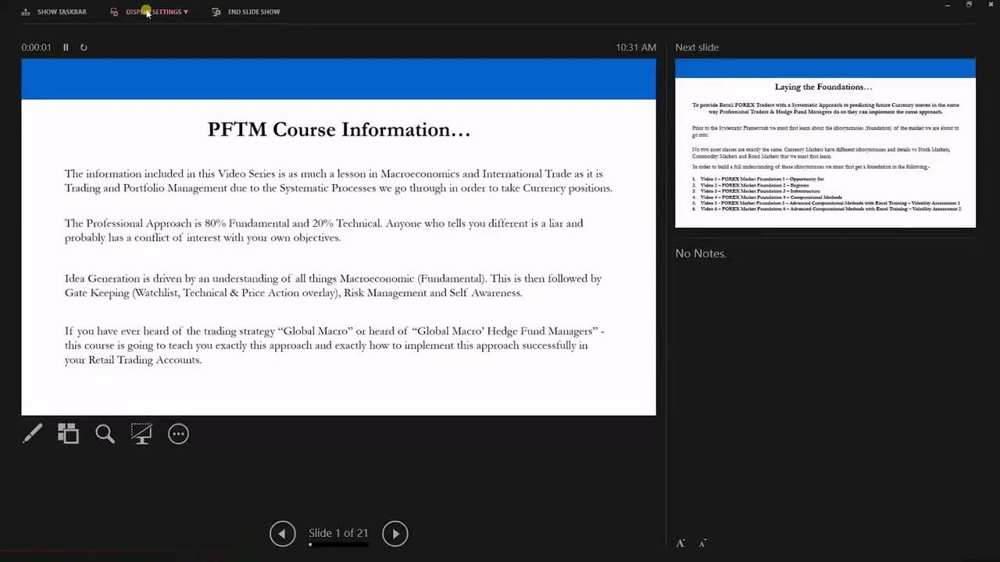
Laying the Foundations — The 6-Video Series
- No two asset classes are the same; currency markets have idiosyncrasies that differ from stocks, commodities and bonds — you must learn these first.
- The Foundation is built across six videos: 1 Opportunity Set, 2 Regimes, 3 Infrastructure, 4 Computational Methods.
- Videos 5 & 6 are Advanced Computational Methods with Excel Training — Volatility Assessment 1 & 2, delivered by the Institute's statistics analyst.
- Only once the foundation is strong does the course move on to building the full systematic process.
Before any systematic framework, you have to understand the market's idiosyncrasies. These six foundation videos plug the knowledge gap between the retail and professional environments so nothing trips you up later.
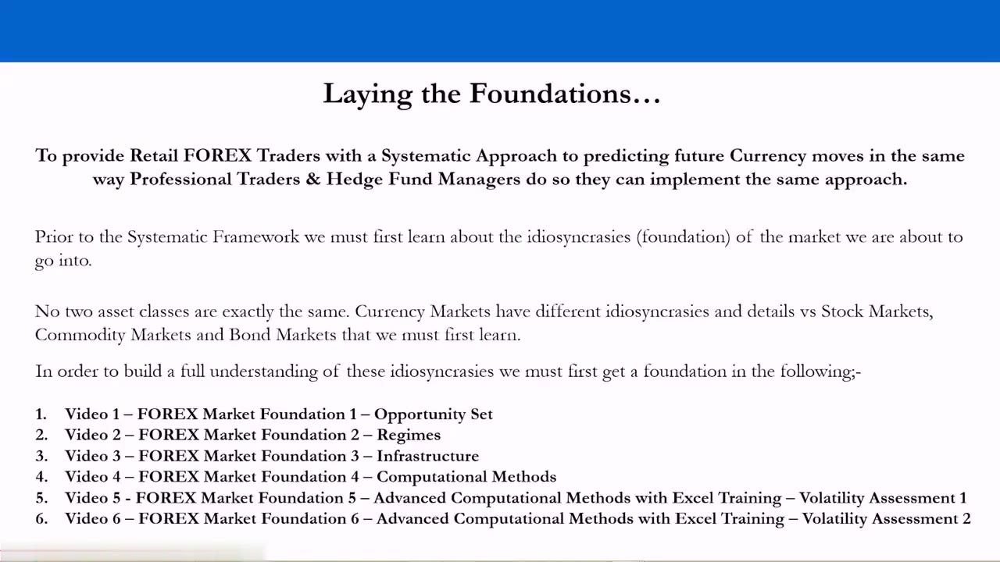
Cutting Through the Noise
- "There is more NOISE in the FOREX market than probably any other Asset Class."
- NOISE = participants (companies and people) with conflicts of interest to your objective, diverting your attention so they get paid.
- Brokers and educators in FX are no different from other asset classes — "in fact they are actually even worse."
- The conflict is volume-based commission: they profit from you trading, not from you winning.
- Understanding the true underpinnings lets you avoid the classic mistakes and stop becoming part of the 90/90/90 — protecting your downside.
The first job is to recognise who benefits when you trade a lot. Once you see the volume-commission conflict of interest, you can separate what is true from what is BS and stop the bleed that wipes out most retail FX accounts.
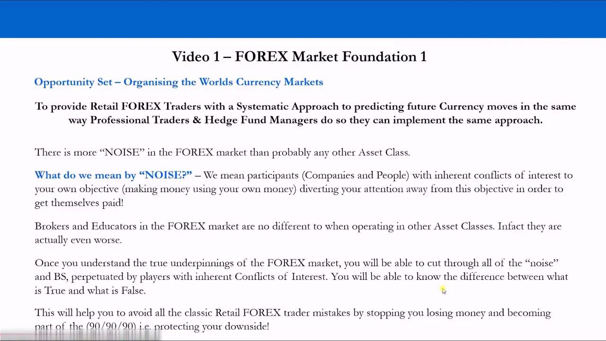
The Investment-Bank View 1 — The G10
- Banks, brokers and media group currencies by SIZE — the volume that trades per day.
- G10: US Dollar (USD), Euro (EUR), Japanese Yen (JPY), British Pound (GBP), Swiss Franc (CHF), Australian Dollar (AUD) C, New Zealand Dollar (NZD) C, Canadian Dollar (CAD) C, Swedish Krona (SEK), Norwegian Krone (NOK) C.
- The letter C marks a Commodity currency — AUD, NZD, CAD and NOK are tagged because their value depends heavily on one or two exported commodities.
- Larger, diverse-export economies (USD, EUR, JPY, GBP, CHF, SEK) are NOT commodity-dependent, so they are typically less concentrated in their volatility drivers.
The classic G10 grouping is anchored to how much volume trades — precisely the thing a volume-paid broker wants you to focus on. Anton keeps only one useful annotation: the C for currencies whose value is concentrated on a commodity, because concentration drives volatility.
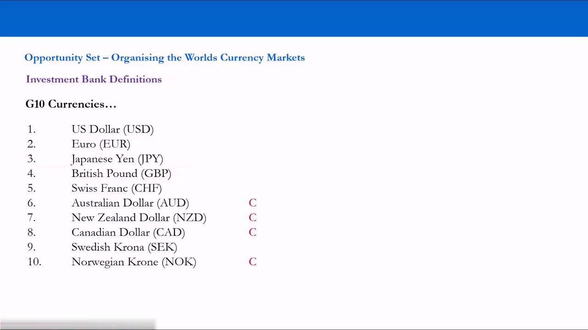
The Investment-Bank View 2 — Emerging EMEA & GCC
- Emerging Currencies (EMEA): Czech Koruna (CZK), Egyptian Pound (EGP) C, Hungarian Forint (HUF), Icelandic Krona (ISK) C, Israeli Shekel (ILS), Polish Zloty (PLN), Romanian Leu (RON), Russian Rouble (RUB) C, South African Rand (ZAR) C, Turkish Lira (TRY) C, Ukranian Hryvnia (UAH) C.
- Emerging Currencies (EMEA / GCC): Kuwaiti Dinar (KWD) CP, Saudi Arabian Riyal (SAR) CP, UAE Dirham (AED) CP, Bahranian Dinar CP, Omani Riyal CP, Qatar Riyal CP.
- EMEA = Europe, Middle East & Africa; GCC = Gulf Co-operation Council.
- P = Pegged (a regime, covered in Video 2); CP = both Commodity and Pegged — all GCC currencies are commodity-exposed (oil) AND pegged.
Emerging markets are split geographically into EMEA and the Gulf. The GCC oil states are all tagged CP: their value depends on the oil price yet is fixed/pegged to a currency or basket of their trading partners — commodity exposure with no room to move.
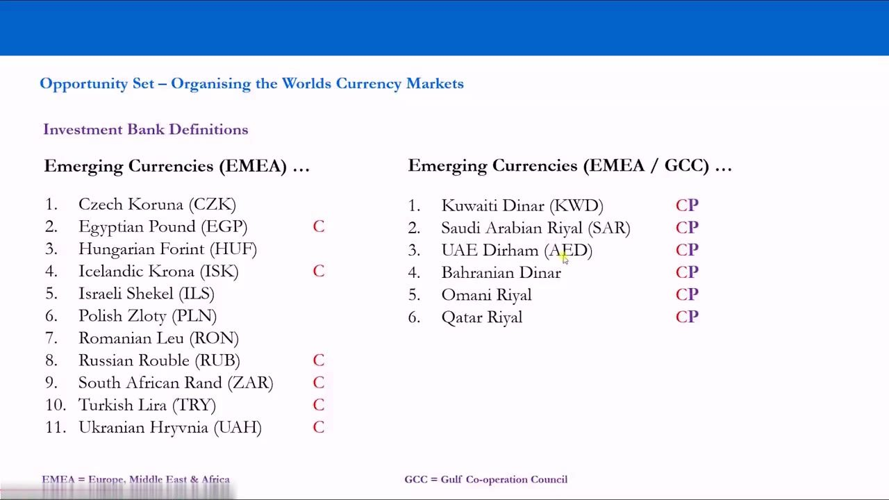
The Investment-Bank View 3 — Emerging Asia
- Emerging Currencies (Asia): Chinese Yuan (CNH) CP, Hong Kong Dollar (HKD) P, Indian Rupee (INR) C, Indonesian Rupiah (IDR) C, Kazakhstan Tenge (KZT) C, Korean Won (KRW), Malaysian Ringgit (MYR) C, Philippine Peso (PHP), Singapore Dollar (SGD) P, New Taiwan Dollar (TWD), Thai Baht (BHT), Vietnamese Dong (VND).
- The Chinese Yuan is CP — commodity-exposed and pegged; the Hong Kong Dollar and Singapore Dollar are P (pegged) but not commodity-driven.
- Several Asian names carry a C for one-or-two-commodity export dependency.
Asia mixes floating, pegged and commodity currencies. The Yuan (crawling peg to USD), the Hong Kong Dollar (pegged to USD) and the Singapore Dollar (pegged to an undisclosed basket) are the pegged regimes that Video 2 examines in detail.
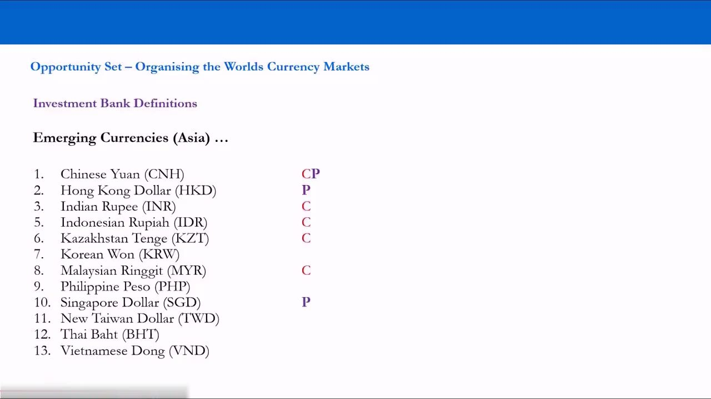
The Investment-Bank View 4 — Emerging LATAM
- Emerging Currencies (LATAM): Argentine Peso (ARS) C, Brazilian Real (BRL) C, Chilean Peso (CLP) C, Colombian Peso (COP) C, Mexican Peso (MXN) C, Peruvian New Sol (PEN) C.
- LATAM = Latin America.
- Every LATAM currency is tagged C — all are commodity-exposed.
- Note the absence of any P: all LATAM currencies are floating regimes.
Latin America is the cleanest case: all six currencies float and all six are commodity-dependent. There are no LATAM currencies that are pegged, and none that lack significant commodity exposure.
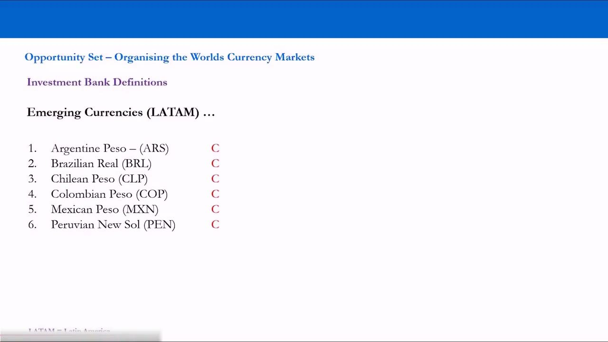
The Professional-Trader View — Segment by Opportunity
- "Professional Traders understand that Volatility creates Opportunities in trading over any given time horizon."
- So they segment currencies by potential OPPORTUNITY, not by geography or transaction size.
- There are 4 main categories: Ex Commodity Floating, Ex Commodity Pegged, Commodity Floating, Commodity Pegged.
- The filters are the currency's REGIME (floating vs pegged) and its COMMODITY exposure.
- Exogenous factors — drivers outside a country's control, like a key trading partner's economy — are what make a currency volatile.
This is the core re-map. Over any time horizon, if an asset doesn't move you can't make money after paying the spread — so what matters is not the flag on the currency but its regime and what it's dependent on. Those two filters produce the four opportunity buckets.
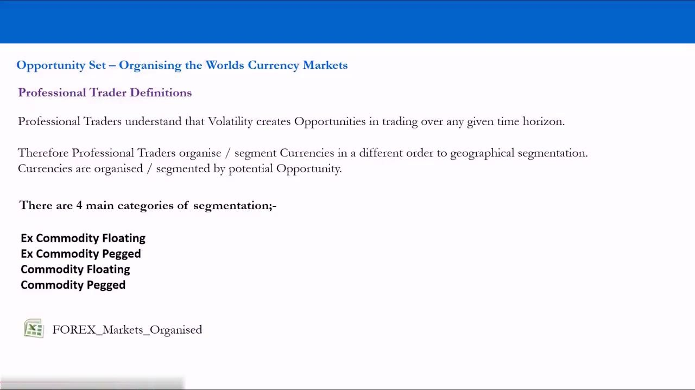
The FOREX_Markets_Organised Workbook
- The full re-segmentation lives in the downloadable FOREX_Markets_Organised Excel workbook (tabs: ORG, SET, MAJORS_CROSSES).
- Currencies are arranged into the four buckets and further split by region (Developed, EMEA, AsiaPac, LATAM).
- Example blocks: Developed Float (USD, EUR, JPY, GBP, CHF, SEK); Developed Commodity Float (AUD, NZD, CAD, NOK); EMEA Commodity PEG (the GCC states); Asia Commodity PEG (Chinese Yuan).
- Download it under Video 1 and familiarise yourself — the definitions are built on later in the series.
The workbook is the practical artefact behind the slides. Every currency is placed into one of the four opportunity buckets and cross-tabbed by region, so you can see at a glance where the tradeable volatility sits.
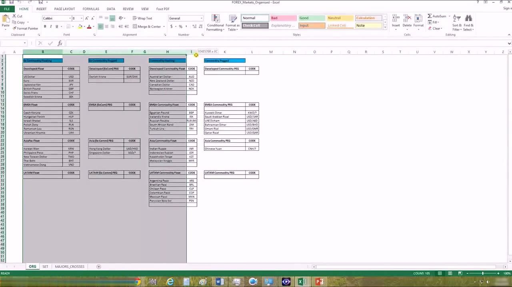
Bucket 1 — Ex-Commodity Floating (17)
- Developed Float: US Dollar USD, Euro EUR, Japanese Yen JPY, British Pound GBP, Swiss Franc CHF, Swedish Krona SEK.
- EMEA Float: Czech Koruna CZK, Hungarian Forint HUF, Israeli Shekel ILS, Polish Zloty PLN, Romanian Leu RON, Ukranian Hryvnia UAH.
- AsiaPac Float: Korean Won KRW, Philippine Peso PHP, New Taiwan Dollar TWD, Thai Baht BHT, Vietnamese Dong VND.
- LATAM Float: none — there are no ex-commodity floaters in Latin America.
These 17 float freely and are NOT concentrated on one or two commodity exports — their volatility comes from a broader, more diverse set of drivers. They are opportunities, just not commodity-driven ones.
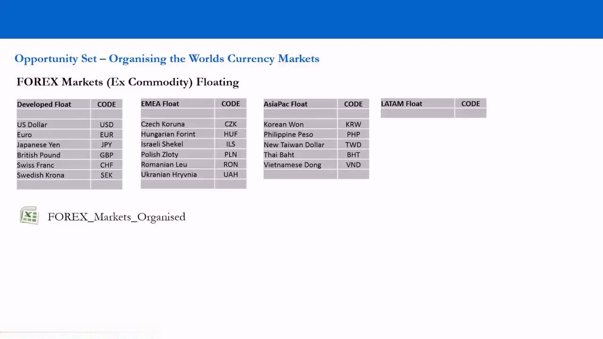
Bucket 2 — Commodity Floating (19)
- Developed Commodity Float: Australian Dollar AUD, New Zealand Dollar NZD, Canadian Dollar CAD, Norwegian Kroner NOK.
- EMEA Commodity Float: Egyptian Pound EGP, Icelandic Krona ISK, Russian Rouble RUB, South African Rand ZAR, Turkish Lira TRY.
- Asia Commodity Float: Indian Rupee INR, Indonesian Rupiah IDR, Kazakhstan Tenge KZT, Malaysian Ringgit MYR.
- LATAM Commodity Float: Argentine Peso ARS, Brazilian Real BRL, Chilean Peso CLP, Colombian Peso COP, Mexican Peso MXN, Peruvian New Sol PEN.
These 19 float AND have significant export exposure to one or two commodities. The four developed names here (AUD, NZD, CAD, NOK) are the G10 "commodity currencies" — Anton refuses to call them G10 and files them by opportunity instead.
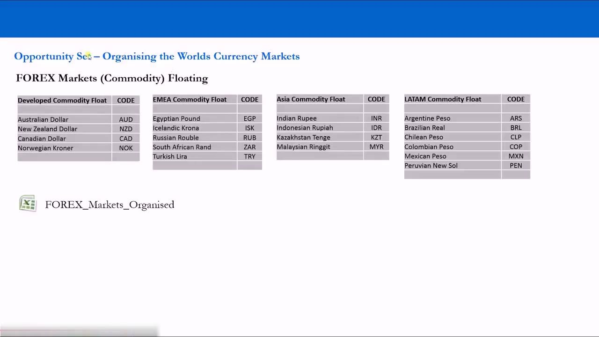
Bucket 3 — Commodity Pegged (no opportunity)
- EMEA Commodity PEG: Kuwaiti Dinar KWD/?, Saudi Arabian Riyal USD/SAR, UAE Dirham USD/AED, Bahrainian Dinar BHD/USD, Omani Rial OMR/USD, Qatar Riyal USD/QAR.
- Asia Commodity PEG: Chinese Yuan CNH/? (a crawling peg to the USD, hence the ?).
- All the GCC oil states sit here: commodity-exposed but fixed to a currency or basket.
- The Kuwaiti Dinar and Singapore Dollar are the only pegged regimes that don't disclose the weightings of what they're pegged to.
Commodity-exposed but pegged: the central authorities hold these within tight ranges, so despite the oil link there is little to no volatility to capture. These are not opportunities for a speculative trader.
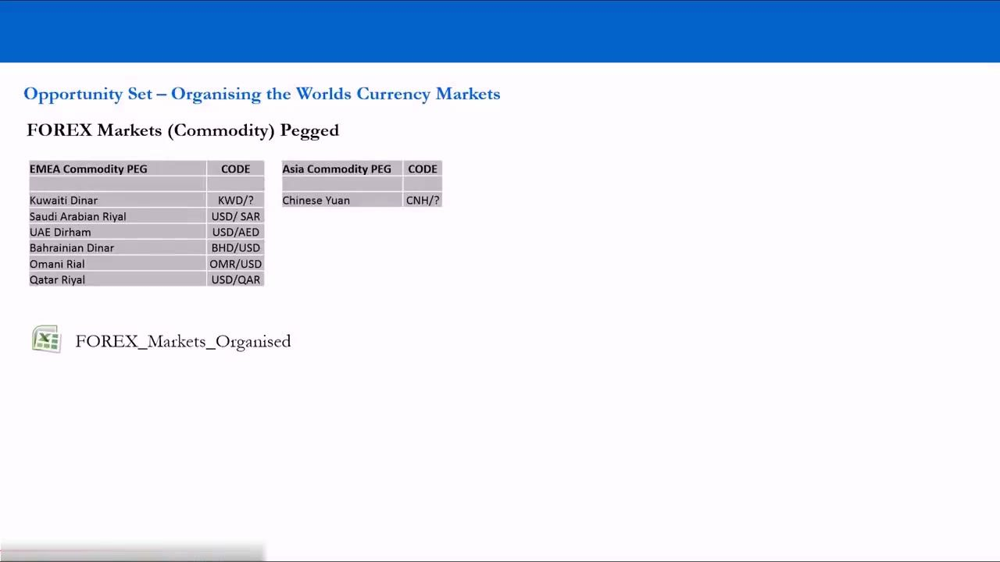
Bucket 4 — Ex-Commodity Pegged (no opportunity)
- Developed (ExCom) PEG: Danish Krone EUR/DKK — pegged to the euro.
- Asia (Ex-Comm) PEG: Hong Kong Dollar USD/HKD (pegged to the USD), Singapore Dollar SGD/? (pegged to an undisclosed basket).
- Denmark is not in the G10 but is a developed nation and an important European trading partner, so it is included in the analysis.
- The Hong Kong Dollar and Singapore Dollar are the only Asian currencies without significant commodity exposure that are also pegged.
Neither commodity-driven nor free to move. Pegged to another currency or basket, these trade in tight bands controlled by central authorities — no volatility, no opportunity.
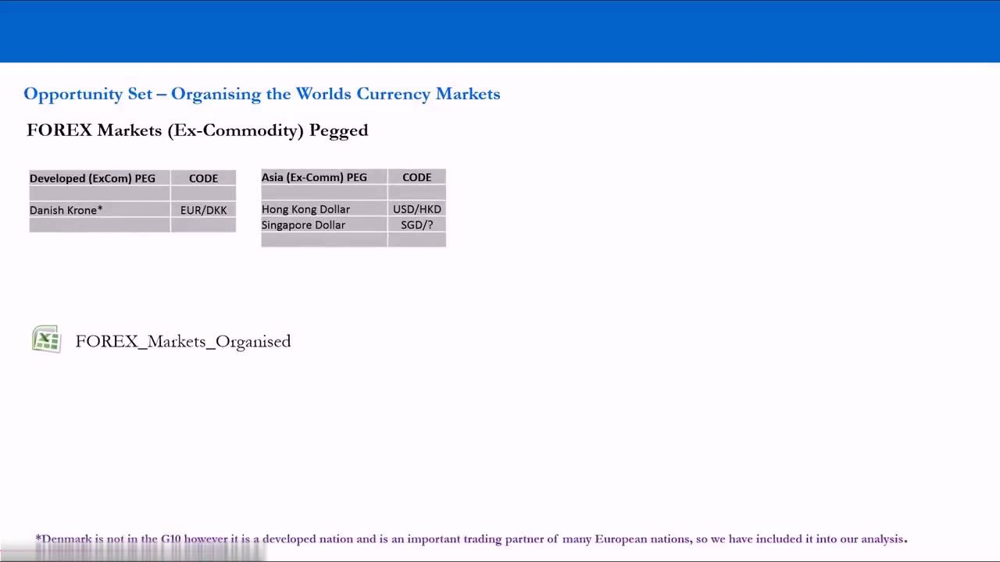
The Count — 46 Currencies, 36 Float, 10 Pegged
- 46 currencies in total: 36 are Floating, 10 are Pegged / Fixed regimes.
- This limits the opportunity set to 36 currencies in the spot market — pegged/fixed regimes are held in very tight ranges by central authorities.
- 17 floaters are Ex-Commodity; 19 are Commodity Currencies. 4 of the commodity-exposed are G10 / developed economies.
- All LATAM currencies float and are commodity-exposed; the only EMEA pegs are GCC countries; Denmark is the only developed economy with a peg (DKK pegged to EUR).
The re-map collapses 46 currencies to a 36-name opportunity set. A pegged currency that trades at essentially the same price every day, week and year gives a speculator nothing to work with, no matter how big its economy is.
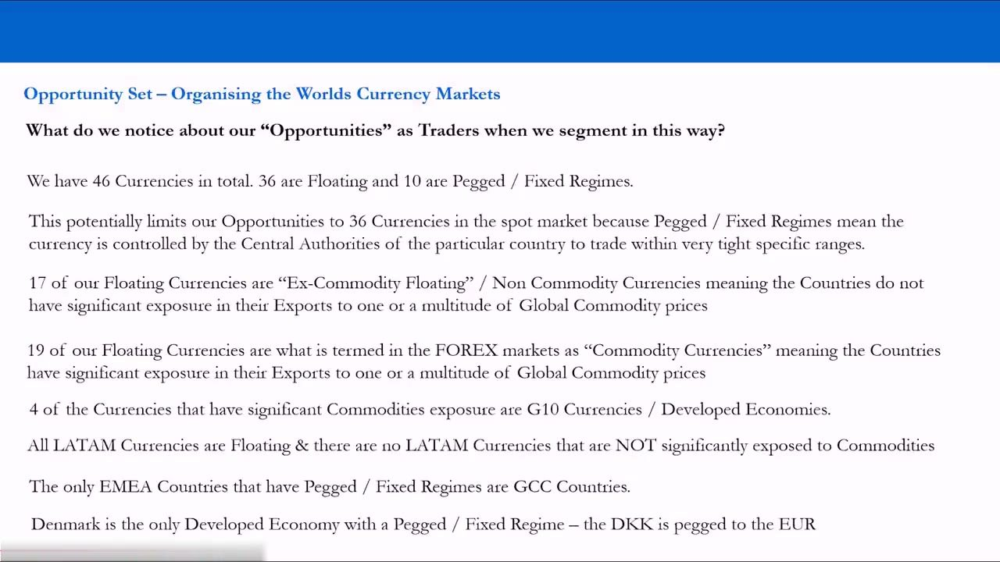
The Volatile Opportunities — 36 Currencies
- FOREX Markets Floating (Ex-Commodity, 17): the Developed, EMEA and AsiaPac floats.
- FOREX Markets (Commodity) Floating (19): the Developed, EMEA, Asia and LATAM commodity floats.
- Together these 36 floating currencies are the tradeable opportunity set — where volatility, and therefore opportunity and risk, actually exists.
- Everything is filtered by regime first, then commodity exposure — never by economy size or geography.
This one page is the payoff: the 36 floaters gathered on a single sheet. This is the universe a professional actually watches for volatility — the rest of the map has been screened out for a good reason.
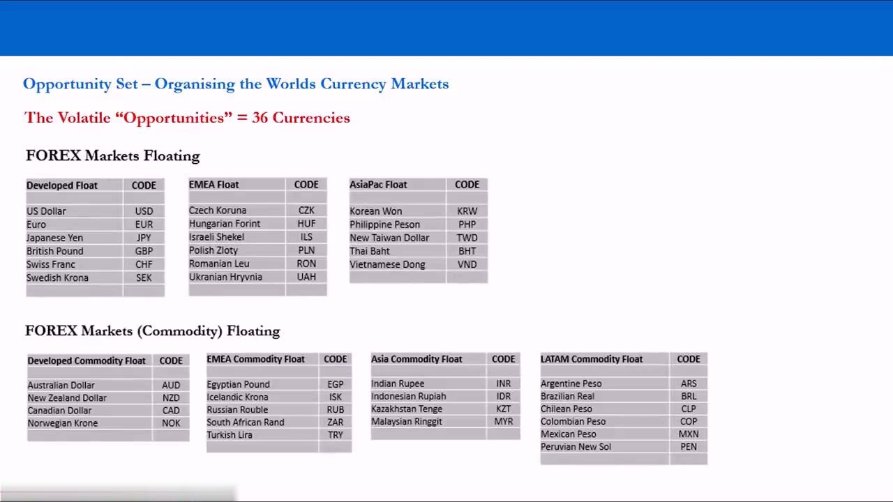
The Non-Volatile "Opportunities" — 10 Currencies
- FOREX Markets (Ex-Commodity) Pegged: Danish Krone EUR/DKK; Hong Kong Dollar USD/HKD, Singapore Dollar SGD/?.
- FOREX Markets (Commodity) Pegged: Kuwaiti Dinar KWD/?, Saudi Arabian Riyal USD/SAR, UAE Dirham USD/AED, Bahrainian Dinar BHD/USD, Omani Rial OMR/USD, Qatar Riyal USD/QAR; Chinese Yuan CNH/?.
- These 10 pegged/fixed regimes offer no meaningful volatility — the price barely moves.
- You will not sit for 5, 10 or 20 years watching a fixed rate waiting for a break — you segment by volatility and focus where opportunity is consistent.
The 10 pegged names are the anti-opportunity set. Buying and selling something that trades at the same price while paying a spread only loses money — so these are set aside unless a central authority abandons the peg.
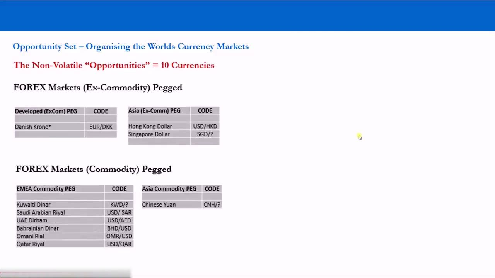
Liquidity — The Dollar Majors are 85% of Volume
- The most traded (liquid) crosses are the Dollar Majors, making up 85% of daily transaction volume.
- Dollar Majors = the major currencies quoted against the USD: EUR, JPY, GBP, CHF, CAD, AUD, HKD.
- A pair quoted against the USD (the world's reserve currency) is a "dollar cross" — e.g. the Russian Rouble at 62.35 means 1 USD = 62.35 RUB.
- Sample February 2015 snapshot vs USD: EUR 0.8786, JPY 119.3000, GBP 0.6481, CHF 1.2438, CAD 1.2438, AUD 1.2839, HKD 7.7584.
Media tickers and broker rundowns are dominated by the Dollar Majors because that's where the volume is. But 85% of volume is a liquidity fact, not an opportunity signal — high volume does not equal high volatility.
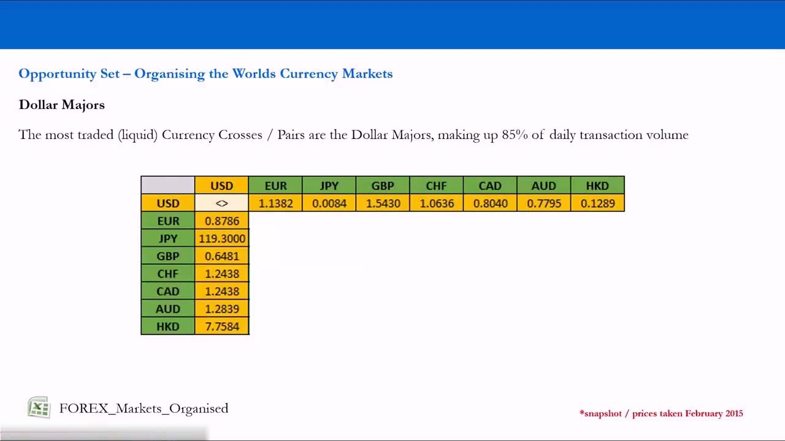
The Most-Liquid Cross Rates
- Cross rates are the pairs NOT quoted against the USD — the majors paired with each other.
- The most liquid cross rates are the Majors paired outside the USD (EUR, JPY, GBP, CHF, CAD, AUD, HKD against each other).
- Example from the February 2015 matrix: CAD buys 95.8590 JPY.
- This is the familiar media cross-rate table — but a table of major currencies against each other is not, by itself, a table of opportunity.
The takeaway of the whole lesson: the tables you're "hammered with" as a retail trader are organised by size and geography. Redraw them by regime and commodity exposure, and the real opportunity set — the 36 floaters — comes into focus.
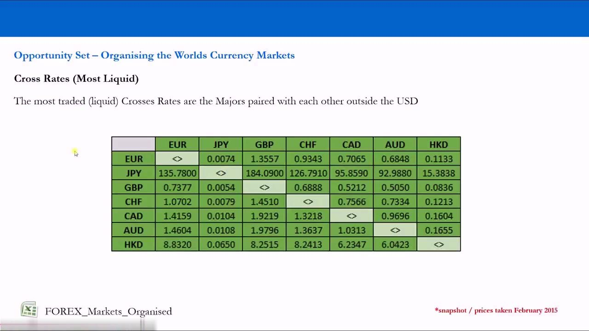
Glossary
- Global MacroA trading strategy that generates ideas from macroeconomic and international-trade fundamentals; the approach global-macro hedge fund managers use and the one this course teaches (80% fundamental, 20% technical).
- NoiseParticipants (companies and people) with conflicts of interest to your objective who divert your attention in order to get themselves paid — heaviest in FX of any asset class.
- 90/90/90The retail-FX statistic that 90% of retail traders lose 90% of their money within 90 days.
- Opportunity SetThe subset of currencies worth trading — the ones with genuine volatility. Here, the 36 floating currencies out of 46 total.
- Floating regimeA currency free to move against all other currencies; the source of the volatility professional traders seek.
- Pegged / Fixed regimeA currency held by central authorities at a set value against another currency or a basket, trading in very tight ranges — little to no volatility to trade.
- Commodity currency (C)A currency whose value depends heavily on one or two exported commodities, concentrating its volatility drivers; tagged C (or CP if also pegged).
- Exogenous factorsDrivers of a currency's value outside the control of the country's central authorities — e.g. a key trading partner's economy or a commodity price.
- G10The investment-bank grouping of the ten largest/most-traded currencies (USD, EUR, JPY, GBP, CHF, AUD, NZD, CAD, SEK, NOK) — a size-based, not opportunity-based, definition.
- EMEA / GCC / LATAMGeographic emerging-market groupings: Europe, Middle East & Africa; Gulf Co-operation Council; Latin America.
- Dollar MajorsThe major currencies quoted against the USD (EUR, JPY, GBP, CHF, CAD, AUD, HKD) — the most liquid pairs, ~85% of daily transaction volume.
- Cross rateA currency pair not quoted against the USD; the most liquid cross rates are the majors paired with each other.
- Crawling pegA peg (e.g. the Chinese Yuan to the USD) whose fixed rate is adjusted over time rather than held exactly constant.